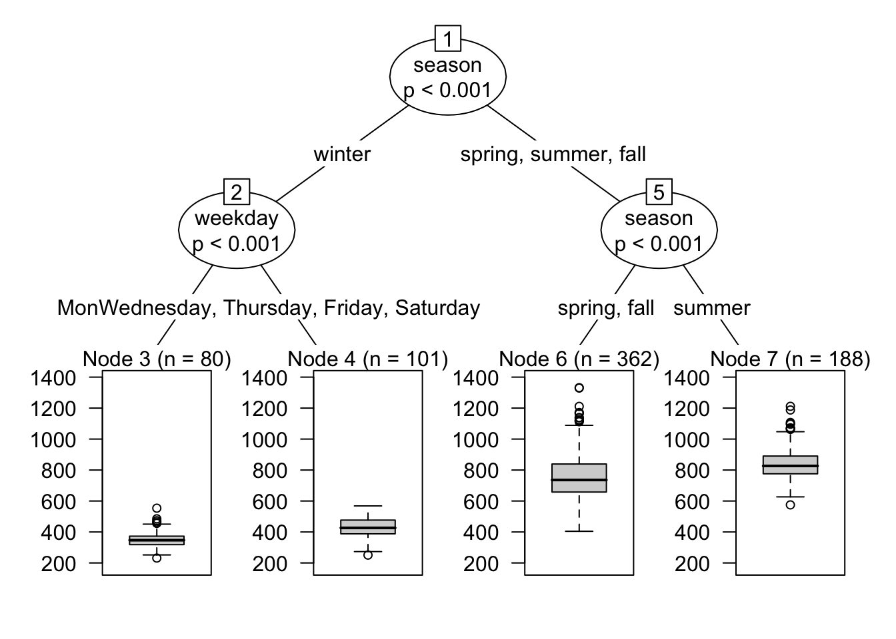

library(marginaleffects)
library(partykit)
data(bikes, package = "fmeffects")
mod <- glm(
count ~ season * weekday + weather * temp,
data = bikes, family = quasipoisson)Heterogeneity
author: “Vincent Arel-Bundock”
This short vignette illustrates how to use recursive partitioning to explore treatment effect heterogeneity. This exercise inspired by Scholbeck et al. 2022 and their concept of “cATE”.
As pointed out in other vignettes, most of the quantities estimated by the marginaleffects package are “conditional”, in the sense that they vary based on the values of all the predictors in our model. For instance, consider a Poisson regression that models the number of hourly bike rentals in Washington, DC:
We can use the comparisons() function to estimate how the predicted outcome changes for a 5 celsius increase in temperature:
cmp <- comparisons(mod, variables = list(temp = 5))
cmp
Term Contrast Estimate Std. Error z Pr(>|z|) S 2.5 % 97.5 %
temp +5 2.96 0.827 3.58 < 0.001 11.5 1.343 4.58
temp +5 1.63 0.645 2.53 0.01155 6.4 0.365 2.90
temp +5 15.97 2.716 5.88 < 0.001 27.9 10.645 21.29
temp +5 22.10 3.546 6.23 < 0.001 31.0 15.145 29.05
temp +5 24.98 4.120 6.06 < 0.001 29.5 16.909 33.06
--- 717 rows omitted. See ?avg_comparisons and ?print.marginaleffects ---
temp +5 25.61 4.373 5.86 < 0.001 27.7 17.036 34.18
temp +5 20.31 3.463 5.86 < 0.001 27.7 13.522 27.10
temp +5 2.47 0.794 3.10 0.00191 9.0 0.909 4.02
temp +5 1.80 0.621 2.91 0.00366 8.1 0.587 3.02
temp +5 16.31 2.813 5.80 < 0.001 27.1 10.792 21.82
Columns: rowid, term, contrast, estimate, std.error, statistic, p.value, s.value, conf.low, conf.high, predicted_lo, predicted_hi, predicted, count, season, weekday, weather, temp
Type: response The output printed above includes 727 rows: 1 for each of the rows in the original bikes dataset. Indeed, since the “effect” of a 5 unit increase depends on the values of covariates, different unit of observation will typically be associated with different contrasts.
In such cases, a common strategy is to compute an average difference, as described in the G-Computation vignette:
avg_comparisons(mod, variables = list(temp = 5))
Term Contrast Estimate Std. Error z Pr(>|z|) S 2.5 % 97.5 %
temp +5 29 4.22 6.88 <0.001 37.2 20.7 37.3
Columns: term, contrast, estimate, std.error, statistic, p.value, s.value, conf.low, conf.high
Type: response Alternatively, one may be interested in exploring heterogeneity in effect sizes in different subsets of the data. A convenient way to achieve this is to use the ctree function of the partykit package. This function allows us to use recursive partitioning (conditional inference trees) to find subspaces with reasonably homogenous estimates, and to report useful graphical and textual summaries.
Imagine that we are particularly interested in how the effect of temperature on bike rentals varies based on day of the week and season:
tree <- ctree(
estimate ~ weekday + season,
data = cmp,
control = ctree_control(maxdepth = 2)
)Now we can use the plot() function to draw the distributions of estimates for the effect of an increase of 5C on bike rentals, by week day and season:
plot(tree)
To obtain conditional average estimates for each subspace, we first use the predict() function in order to place each observation in the dataset in its corresponding “bucket” or “node”. Then, we use the by argument to indicate that comparisons() should compute average estimates for each of the nodes in the tree:
dat <- transform(bikes, nodeid = predict(tree, type = "node"))
comparisons(mod,
variables = list(temp = 5),
newdata = dat,
by = "nodeid")
Term Contrast nodeid Estimate Std. Error z Pr(>|z|) S 2.5 % 97.5 %
temp mean(+5) 3 6.42 1.024 6.26 <0.001 31.3 4.41 8.42
temp mean(+5) 4 2.27 0.536 4.23 <0.001 15.4 1.22 3.32
temp mean(+5) 6 44.11 6.416 6.87 <0.001 37.2 31.53 56.68
temp mean(+5) 7 21.43 3.250 6.59 <0.001 34.4 15.06 27.80
Columns: term, contrast, nodeid, estimate, std.error, statistic, p.value, s.value, conf.low, conf.high, predicted_lo, predicted_hi, predicted
Type: response The four nodeid values correspond to the terminal nodes in this tree:
print(tree)
Model formula:
estimate ~ weekday + season
Fitted party:
[1] root
| [2] weekday in Sun, Sat
| | [3] season in fall, summer, winter: 6.417 (n = 156, err = 341.3)
| | [4] season in spring: 2.267 (n = 54, err = 24.4)
| [5] weekday in Mon, Tue, Wed, Thu, Fri
| | [6] season in fall, summer, winter: 44.105 (n = 392, err = 31243.9)
| | [7] season in spring: 21.431 (n = 125, err = 2434.0)
Number of inner nodes: 3
Number of terminal nodes: 4